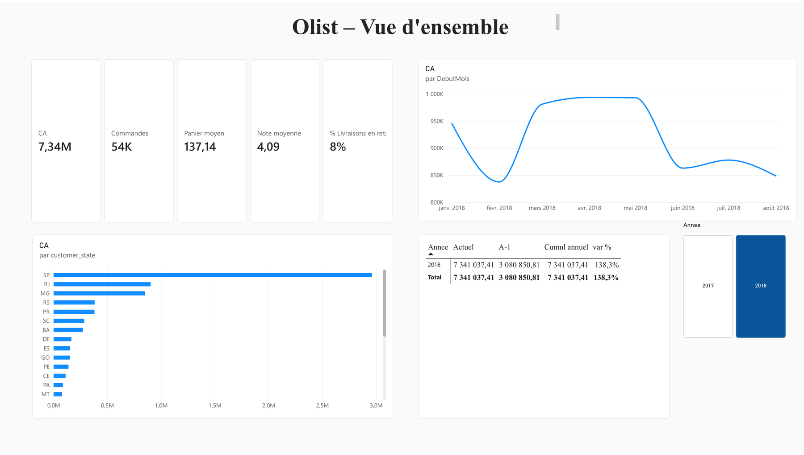
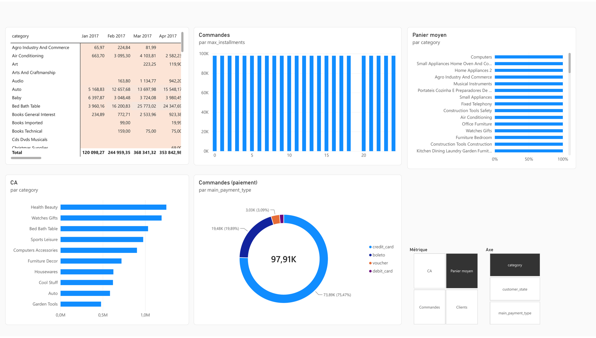
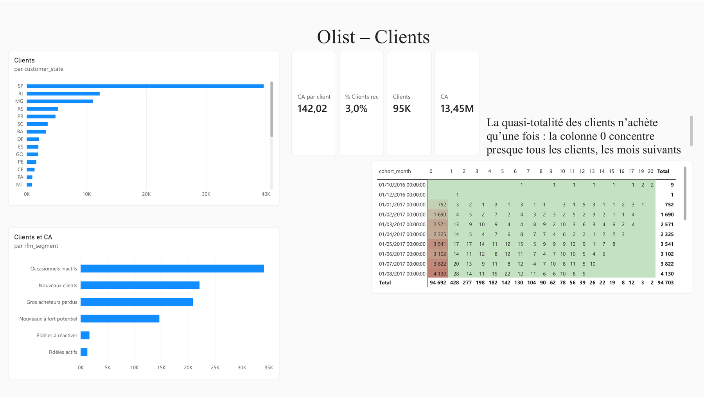
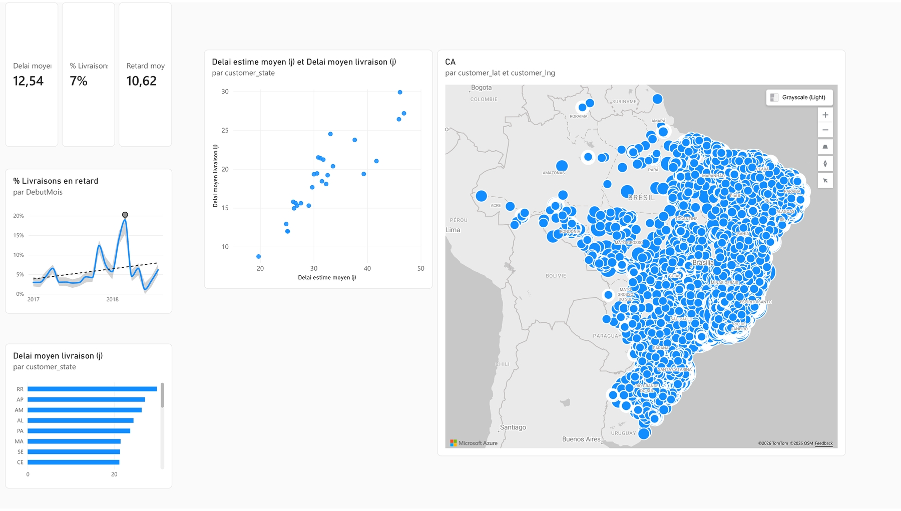
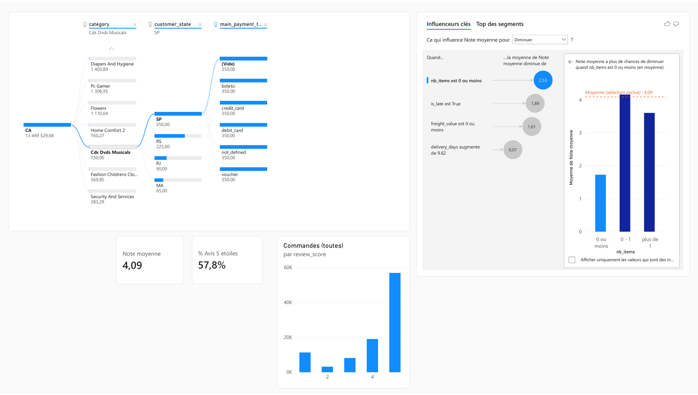
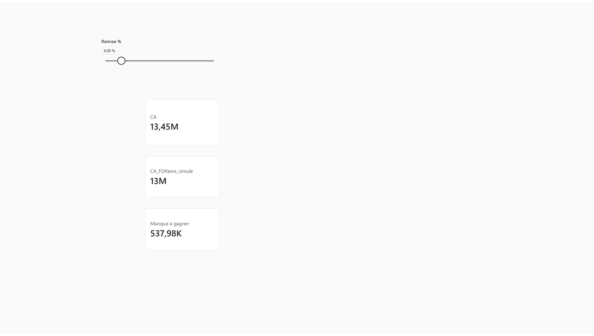
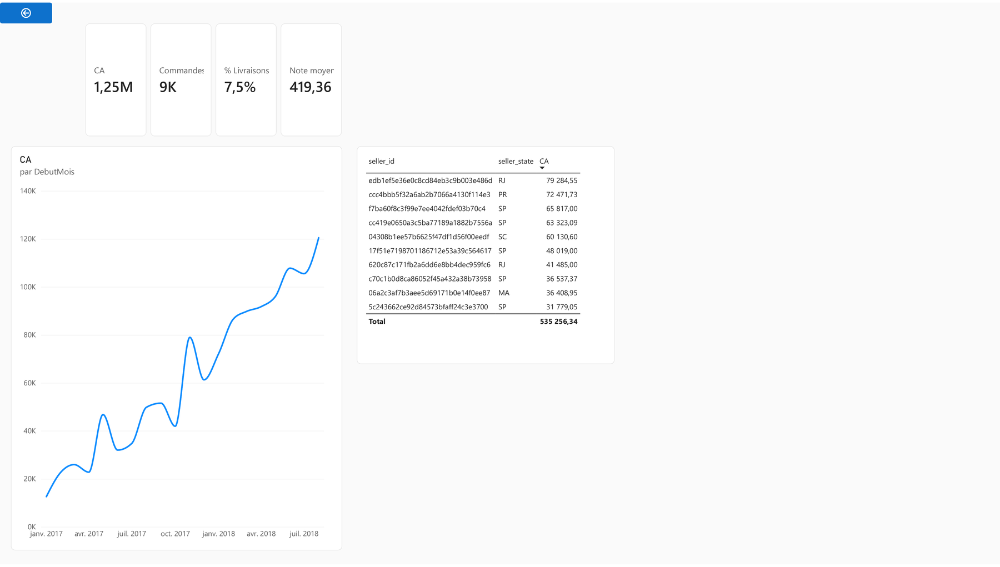

Comment évoluent les ventes ?
Chiffre d'affaires, commandes, panier moyen et variation par rapport à l'année précédente.
Un rapport décisionnel construit sur environ 100 000 commandes réelles de la marketplace brésilienne Olist (2016 à 2018) : ingestion dans un Lakehouse Fabric, modélisation en étoile, modèle sémantique Direct Lake et rapport Power BI de 7 pages.

Olist met en relation de petits vendeurs avec les grandes marketplaces brésiliennes.
Chiffre d'affaires, commandes, panier moyen et variation par rapport à l'année précédente.
Chiffre d'affaires par catégorie et par État, modes de paiement.
Part de clients récurrents, segments RFM et cohortes d'acquisition.
Délais, retards, note moyenne et facteurs d'insatisfaction.
Des fichiers bruts au rapport, tout tourne dans un seul espace de travail Fabric.
9 fichiers CSV déposés dans le Lakehouse.
9 tables Delta et profilage de la qualité.
Dimensions et faits : client unique, RFM, cohortes, KPI de livraison.
Unicité des clés, intégrité référentielle, réconciliation du CA.
Schéma en étoile, environ 40 mesures DAX, groupe de calcul.
7 pages, extraction, info-bulles et visuels IA.
| Table | Grain | Lignes (env.) |
|---|---|---|
| fact_order_items | un article vendu | 110 000 |
| fact_orders | une commande, tous statuts | 99 400 |
| dim_customer | un client unique | 96 000 |
| dim_product | un produit | 33 000 |
| dim_seller | un vendeur | 3 100 |
| dim_date | un jour | 1 096 |
Deux tables de faits partagent les dimensions. fact_orders est reliée deux fois à dim_date : date d'achat (active) et date de livraison (activée par USERELATIONSHIP).
customer_id change à chaque commande : le vrai client est customer_unique_id, utilisé comme clé partout.Les choix qui changent le résultat, et pourquoi.
Les requêtes lourdes dépassaient la limite de 10 minutes du Dataflow Gen2. Réécrites en PySpark, elles s'exécutent en moins de 2 minutes ; Power Query reste utilisé pour les transformations légères.
Le modèle lit directement les tables Delta, sans copie ni actualisation d'import. Les calculs qui auraient été des colonnes calculées sont faits en amont, dans la couche gold.
Actuel, A-1, cumul annuel et variation s'appliquent à n'importe quelle mesure, au lieu de dupliquer chaque mesure en quatre versions.
Presque tous les clients n'ont qu'une commande : la fréquence suit une règle métier (1, 2, 3 commandes et plus) plutôt que des quintiles sans signification.
Comparer 2018 à toute l'année 2017 donnait +20 %. De janvier à août contre janvier à août, la croissance réelle est de +138 %.
Sur un même graphique, l'utilisateur choisit la métrique (CA, commandes, panier, clients) et l'axe d'analyse (catégorie, État, paiement).
Période analysée : janvier 2017 à août 2018.
De janvier à août, le chiffre d'affaires passe de 3,08 M BRL en 2017 à 7,34 M en 2018.
Sur 95 000 clients, très peu reviennent : la croissance vient de l'acquisition, pas de la fidélisation.
São Paulo génère à lui seul plus de chiffre d'affaires que les trois États suivants réunis.
12,5 jours de délai moyen, et plus de 25 jours dans les États du Nord. Un retard dure en moyenne 10,6 jours.
Selon le visuel Influenceurs clés, une commande en retard fait baisser la note de 1,9 point en moyenne.
Le boleto bancaire représente 20 % des commandes ; le paiement en plusieurs versements est courant.
Cliquez sur une capture pour l'ouvrir en grand.






Ce que le projet ne couvre pas encore.